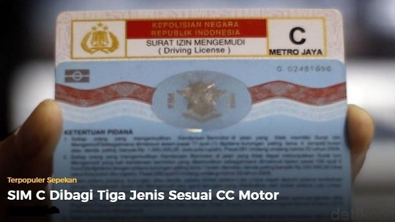
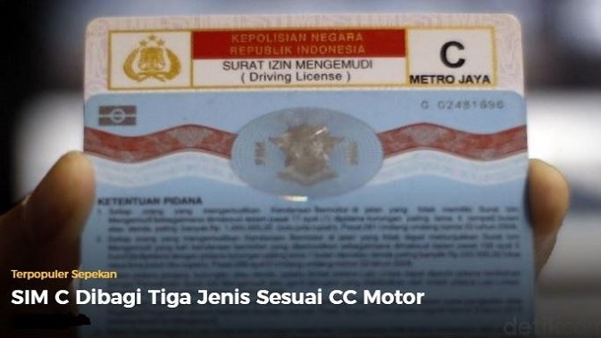
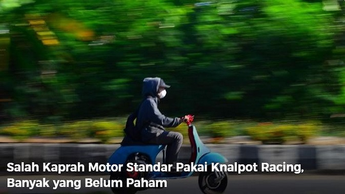
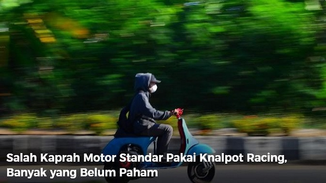

 

YBIKE is a motorcycle dealer formed on december 30, 2016 and based in Jakarta, Indonesia.
YBIKE sells motorcycle from 2 famous brands motorcycle: Vixian and Kawasako. The Dealer is led by Carvin Joestar.
The Products are kept inside a secure warehouse and covered with a large fabric to keep them clean of dusts.